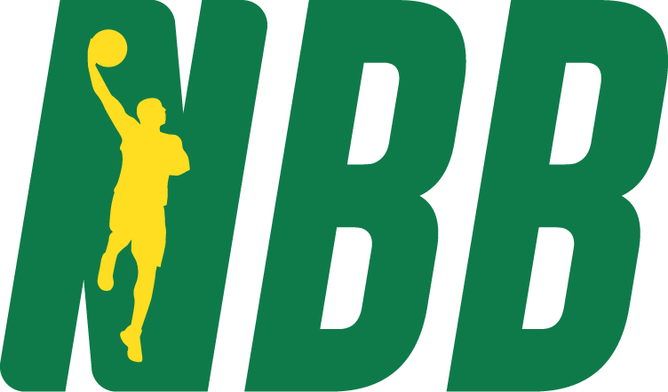

NBB (Novo Basquete Brasil)
|  |
|
A Novo Basquete Brasil (NBB) é a principal liga profissional de basquete do Brasil. Fundada em 2008, a NBB representa um marco na organização do basquete no país, unificando equipes de diversas regiões e promovendo um elevado nível de competição. A liga trouxe maior visibilidade ao esporte, incentivando o crescimento da base de fãs e o desenvolvimento de talentos locais. A NBB é disputada por times de todo o Brasil, incluindo equipes tradicionais e recém-criadas, com jogadores nacionais e estrangeiros. A liga adotou padrões internacionais de organização e transmissão de jogos, contribuindo para a profissionalização do basquete brasileiro. Além disso, a NBB tem servido como um trampolim para jogadores brasileiros que desejam seguir carreiras no basquete internacional. A liga tem desempenhado um papel crucial na revitalização do basquete no Brasil, atraindo patrocinadores e fãs e proporcionando aos jogadores uma plataforma competitiva para aprimorar suas habilidades. A NBB também é responsável por aumentar o interesse no basquete brasileiro, contribuindo para o desenvolvimento do esporte em todo o país e elevando o nível de competição em âmbito nacional e internacional. |